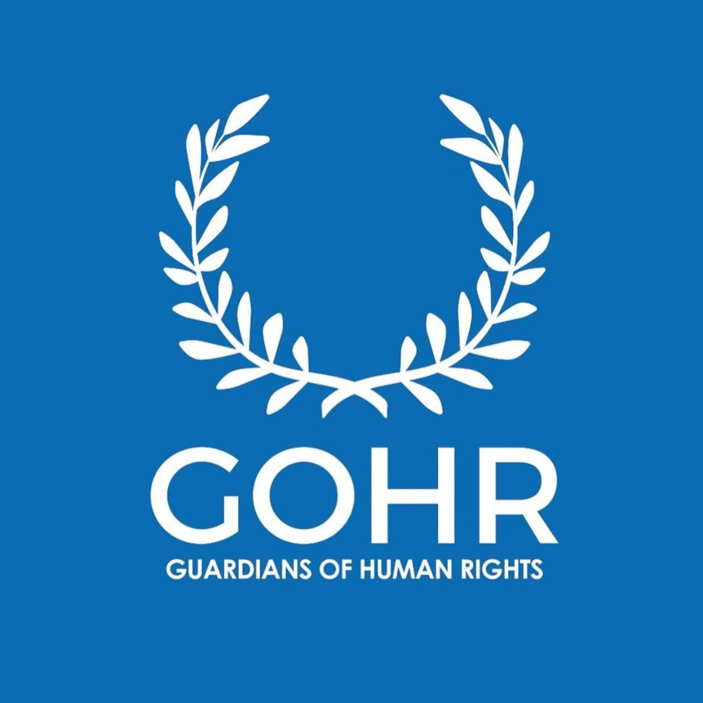

Propósito
Centralizar información dispersa para comprender la emergencia, consultar fuentes, encontrar recursos y elegir responsablemente una campaña.
Última revisión: 28.07.2026 · 16:44 CEST Berlín / 10:44 VET Venezuela.

Resumen verificable de la catástrofe, sus consecuencias humanitarias, la respuesta internacional, herramientas ciudadanas y campañas de donación organizadas por país.
Centralizar información dispersa para comprender la emergencia, consultar fuentes, encontrar recursos y elegir responsablemente una campaña.
Las cifras cambian por nuevos hallazgos, depuración de registros y diferencias metodológicas. Exposición, afectación potencial, necesidad humanitaria y damnificación no son categorías sumables.
Fundación registrada en Florida, Estados Unidos, con Dirección Europa y trabajo internacional. La respuesta de emergencia apoya alojamiento temporal, colchones, tiendas, agua potable, saneamiento, equipos básicos, transporte, logística y distribución.
Caritas international, obra de ayuda del Deutscher Caritasverband e.V., mantiene una campaña directa de donación para la emergencia en Venezuela. La ayuda se coordina con Caritas Venezuela y estructuras locales para apoyar a familias afectadas con alimentos, agua potable, higiene, refugio temporal, acompañamiento psicosocial y otras necesidades urgentes.
Las campañas están organizadas en menús desplegables rápidos por país o región. No es necesario escribir datos ni usar buscadores: abre el bloque correspondiente y elige directamente la organización que deseas apoyar.
Este sitio organiza información pública de organismos, autoridades, organizaciones, plataformas y herramientas ciudadanas. Las cifras pueden cambiar o diferir por fecha, definición o método. GOHR USA–Europa no procesa donaciones destinadas a terceros ni certifica campañas particulares de crowdfunding. Verifica fuente, beneficiario y condiciones antes de donar o difundir datos personales.